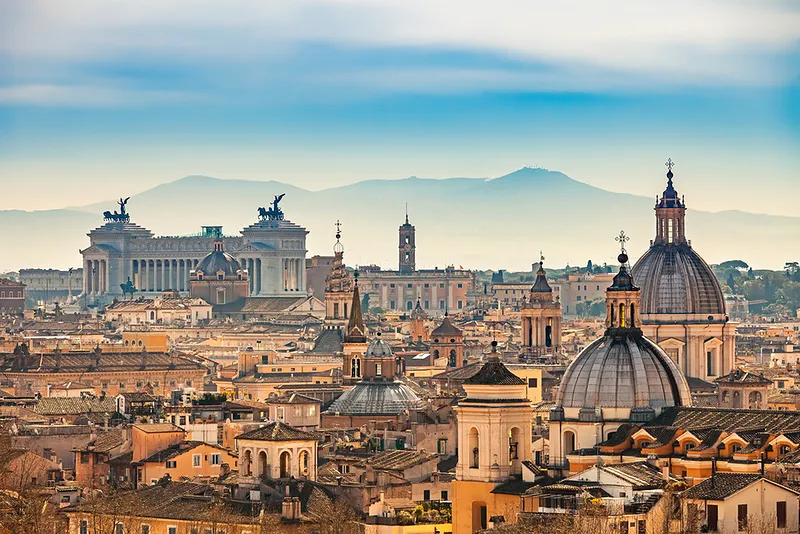
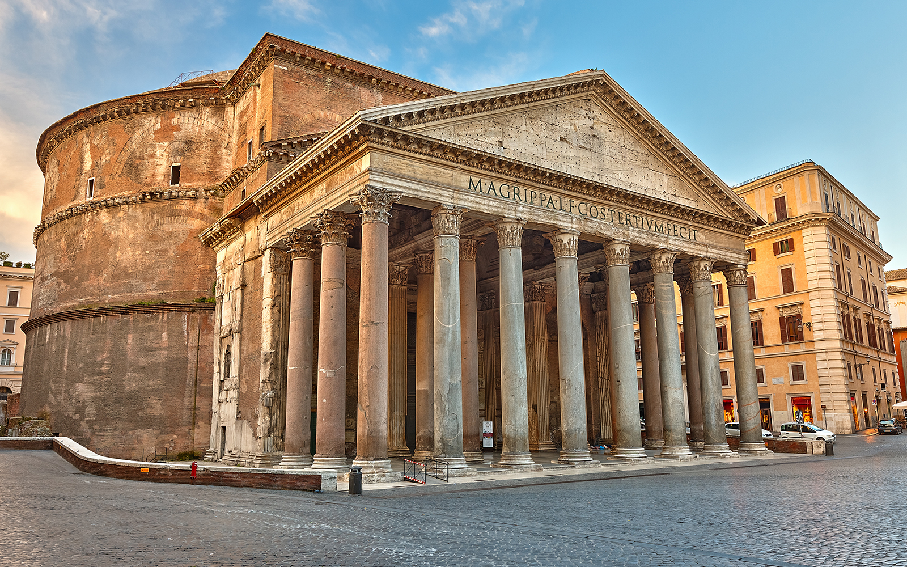
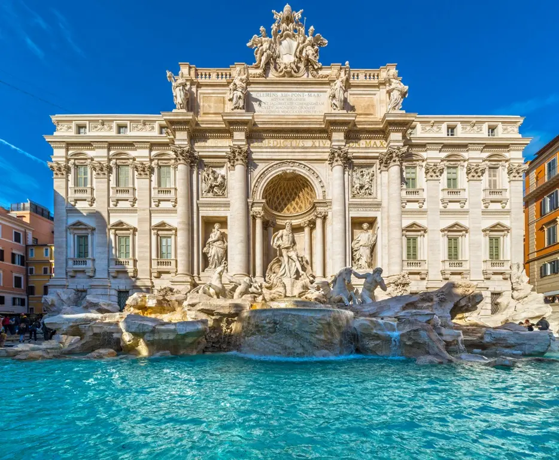
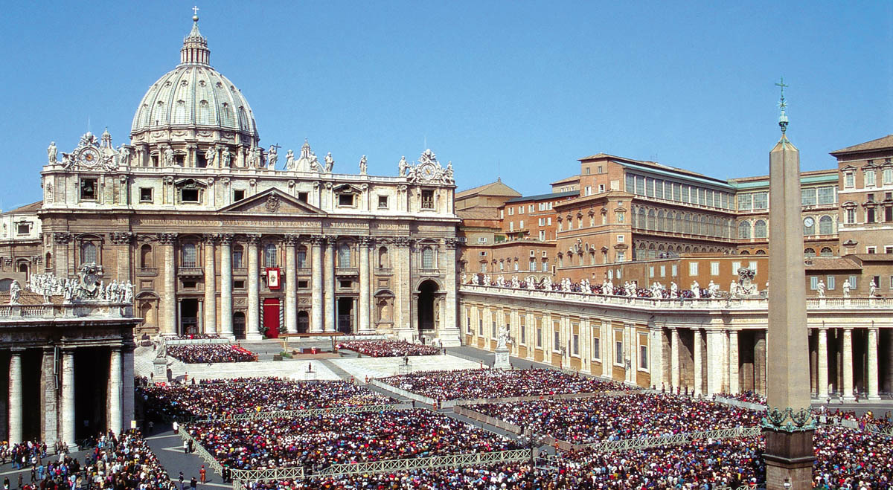
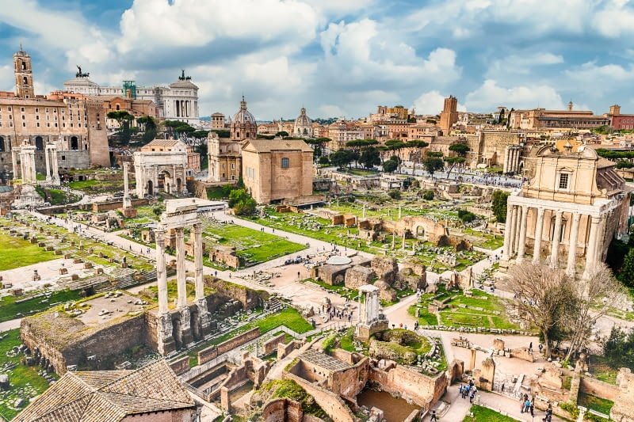

Rzym
Rzym ::: Kraków ::: Berlin

Rzym jest metropolią o znaczeniu globalnym, a także dużym węzłem komunikacyjnym z jednym z największych międzynarodowych portów lotniczych w Europie, który obsługuje ponad 38 milionów pasażerów rocznie, rozbudowaną siecią autostrad i linii kolei dużych prędkości. Światowy ośrodek turystyczny z bardzo bogatymi zabytkami starożytności i średniowiecza (kościoły, bazyliki, Koloseum, pałace, akwedukty, fontanny i wiele innych budowli), niezwykle bogate muzea, nowoczesne osiedla mieszkaniowe na przedmieściach. W 1960 roku organizował Letnie Igrzyska Olimpijskie.
Rzym powstał w epoce żelaza, jako osada Latynów, usytuowana na szczycie Palatynu. Jego mieszkańcy byli prostymi pasterzami owiec (około 800–750 p.n.e.). Z czasem zajęli się rzemiosłem i handlem z sąsiadami (bogactwo Rzymu pochodziło ze sprzedaży soli pozyskiwanej w salinach u ujścia Tybru). Ludności zaczęło przybywać i zasiedlono Eskwilin i Kapitol. Według tradycji, przekazanej przez Liwiusza, Rzym założył Romulus 21 kwietnia 753 p.n.e. i został jego pierwszym królem.
Panteon

Panteon w Rzymie (łac. Pantheon[1], z greckiego Πάνθειον, pan – wszystko, theoi – bogowie, panteon – miejsce poświęcone wszystkim bogom) – okrągła świątynia na Polu Marsowym, ufundowana przez cesarza Hadriana w roku 126 na miejscu wcześniejszej z 27 r. p.n.e., zniszczonej w pożarze w 64 r. n.e.
Fontanna di Trevi

Fontanna di Trevi (wł. Fontana di Trevi) – najbardziej znana barokowa fontanna w Rzymie, w rione Trevi (R. II). Została zbudowana z inicjatywy Klemensa XII w miejscu istniejącej wcześniej fontanny zaprojektowanej przez Leona Battiste Albertiego z 1435 r. Zasila ją woda doprowadzona akweduktem zbudowanym w 19 r. p.n.e. przez Agrypę, tym samym, który zasila fontannę Barcaccia znajdującą się u podnóża Schodów Hiszpańskich.
Watykan z Bazyliką Świętego Piotra

Bazylika Świętego Piotra na Watykanie (wł. Basilica Papale di San Pietro in Vaticano; łac. Basilica Sancti Petri) – rzymskokatolicka bazylika na Wzgórzu Watykańskim, zbudowana w latach 1506–1626, na miejscu starszej bazyliki wczesnochrześcijańskiej, fundacji cesarza Konstantyna Wielkiego, jedna z czterech bazylik większych Rzymu oraz jedna z wielu bazylik papieskich (dawniej patriarchalnych), sanktuarium, jeden z najważniejszych ośrodków pielgrzymkowych.
Koloseum

Jest to duża, eliptyczna budowla o długości 188 m i szerokości 156 m, obwodzie 524 m, wysokości 48,5 m, z pojemną widownią, która mogła pomieścić od 45 do 50 tysięcy widzów[2]; z galeriami komunikacyjnymi oraz areną z systemem podziemnych korytarzy. W czterokondygnacyjnym podziale zewnętrznym zastosowano spiętrzenie porządków (najniższa kondygnacja w porządku toskańskim, druga w jońskim, trzecia w korynckim). Trzy niższe kondygnacje związane są z konstrukcyjnym układem arkad, czwarta, najwyższa została zaopatrzona tylko w małe okna. Od strony wewnętrznej budowla jest pięciokondygnacyjna. Cztery kondygnacje zbudowano jako układ pomieszczeń wydzielonych pomiędzy filarami, ścianami, ze sklepieniami kolebkowymi i krzyżowymi. Umieszczono tam bufety, szatnie, natryski, pomieszczenia dla gladiatorów, klatki dla zwierząt, korytarze. Wokół areny wzniesione było podium. Do Koloseum prowadziło 80 ponumerowanych wejść (zachowały się oznaczenia wejść od nr XXIII do LIV), które zapewniały szybkie (przez ok. 6 minut) opuszczenie widowni przez widzów (jednak taką możliwość mieli tylko widzowie z dolnych i środkowych rzędów). Istniała też możliwość przykrycia całej widowni specjalną osłoną (velarium) w deszczowe lub bardzo słoneczne dni.
Forum Romanum

Forum Romanum (Forum Magnum) – najstarszy plac miejski w Rzymie, otoczony sześcioma z siedmiu wzgórz: Kapitolem, Palatynem, Celiusem, Eskwilinem, Wiminałem i Kwirynałem. Główny polityczny, religijny i towarzyski ośrodek starożytnego Rzymu, miejsce najważniejszych uroczystości publicznych.